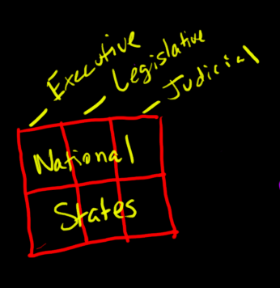

An in-depth look at American history with an emphasis on research and critical thinking. The BJU Press textbook was used for this course. The lecture recordings are included below. Beneath each chapter heading you will find the overall goals for the chapter. Beneath each section's audio you will find the objectives for that section.
Name and describe the three types of colonial administration.
List reasons for colonization.
Identify the early colonies and compare the manner in which they were founded.
Recognize God's guiding hand in the foundation of the American tradition of representative government.
Explain how Puritanism shaped New England communities and tell how it changed during the seventeenth century.
Explain the various viewpoints on the relationship between church and state and argue a biblical position.
Recognize God's providence in the development of distinct regions within the United States, particularly the North and the South.
Chapter 2.1 Why the English Came
Give three reasons that settlers came to the North American colonies.
Chapter 2.2 English Settlements Made Permanent
Explain why the year 1619 was important in the history of the Virginia colony.
List and describe the three types of colonial administration developed by the British.
Chapter 2.3 The New England Colonies
Distinguish between the Pilgrims and the Puritans.
Recount the circumstances of the founding of each of the New England colonies.
Chapter 2.4 The Middle Colonies
Describe the birth, the growth, and the demise of New Netherland.
Recount how each of the middle colonies was founded.
Chapter 2.5 The Southern Colonies
Describe how the Carolinas became colonies.
State the two purposes for the founding of Georgia.
Chapter 3 Colonial Life
Chapter Goals
Identify the origins of cultural traditions of the United States, including ethnic diversity, self-sufficient families, and emphasis on education.
Describe some of the diversity of housing, diet, education, occupations, and recreation in the colonies.
Compare modern life and colonial life to appreciate the blessings of God on each generation and to recognize the transformation of Americans' understanding of "good living."
Chapter 3.1 The Rhythms of Life
Describe how and why the Scots-Irish and the Germans settled in the British colonies.
Explain why large families became common in the colonies.
List some of the common causes of death in the colonies.
Chapter 3.2 At Home
Describe the housing constructed by the colonists.
Discuss the agricultural exchange between America and Europe.
Explain why education was important to the colonists.
Describe the typical educational efforts made in each of the colonial regions.
Chapter 3.3 At Work
Describe some of the diversity of labor in the colonies.
Chapter 3.4 At Play
Describe some of the recreational activities enjoyed by the colonists.
Chapter 4 Religion in the American Colonies
Chapter Goals
Describe the formation of the unique traditions of American religion, particularly denominational diversity, missions, and revivalism.
Identify praiseworthy Christians from the colonial era and seek to imitate their character.
Contrast modern worship with colonial worship to recognize the transformation of Americans' understanding of good church life.
Identify the causes of religious decline and recognize the need for revival in every generation.
Analyze the progress and the effects of the Great Awakening.
Chapter 4.1 Established Denominations
Describe the religious struggles within the English church under Henry VIII, Edward VI, Mary I, and Elizabeth I, respectively.
Identify the Separatists and the three main factions within the Anglican church.
Describe the Puritan view of the covenant.
Explain the nature and the shortcomings of the Half-Way Covenant.
Name the two leaders who helped organize the Anglican Church in America.
Chapter 4.2 Non-Established Denominations
Identify the leading figures and the main teachings of the English Separatist denominations in America.
Identify the continental European denominations in America along with their significant leaders, teachings, and emphases.
Chapter 4.3 Colonial Worship
Describe the main features of a typical colonial church building.
Describe the order of service in a typical colonial church.
Chapter 4.4 Native American Missions
Name the leaders of the Congregationalist and Moravian efforts to reach the Native Americans with the gospel.
Compare the methods, the approaches, and the results of Moravian and Congregationalist efforts and Native American evangelism.
Chapter 4.5 The Great Awakening
Explain the need for religious revival in the colonies.
Name the major leaders of the Great Awakening.
List the results of the Great Awakening.
Unit 2: Forge
Chapter 5: The Rising Storm
Chapter Goals
Identify the first main threat to the British colonies - French lust for empire - and the four wars that resulted.
Recall major leaders and battles of the French and Indian War.
Outline the causes, course, and consequences of the French and Indian War.
Discuss the British victory over the French at the Battle of Quebec and the battle's role as a turning point in North American history.
Explain how military victory can bring disastrous consequences, as when Britain won the French and Indian War but soon lost the American colonies.
Compare arguments on the traditional rights of the English people and the legitimacy of asking the colonies to pay a share of the costs of empire.
Review God's sovereign control of the course of events in the 1760s that led to America's break from Britain.
Discuss the factors that created a national consciousness among American colonists.
Chapter 5.1 Frontier Feuds
Describe the French threat to the British colonies.
Name the first three wars fought in America between the French and the British.
Summarize the activities of these French and Indian wars and their results.
Chapter 5.2 The French and Indian War
Outline the causes and the course of the French and Indian War.
Describe the advantages that each side enjoyed in the French and Indian War.
Describe William Pitt's plan for ending the war.
List the results of the war, including Pontiac's uprising.
Chapter 5.3 The Growing Rift
List and explain the conditions that led American colonists to develop attitudes that distanced them from the mother country.
Recount Parliament's actions in the 1760s that angered colonists.
Describe the colonists' actions to protest British efforts to tighten colonial rule.
Describe the circumstances that triggered the Boston Massacre.
Chapter 6: Independence
Chapter Goals
Review God's sovereign control of the events in the 1770s that led to America's War for Independence.
Summarize the issues related to any revolt against government and defend a biblical position on armed revolt.
Identify the major leaders in the struggle for independence, citing how their lives serve to inspire or to warn modern Americans.
Outline the sequence of events, including major battles, that led to American independence.
Evaluate the significance of the Declaration of Independence as a foundational document for American government.
Determine how America's revolution was different from those that have occurred in other places.
Chapter 6.1 The Eve of War
Explain how some of the rights of the colonists were taken away in the wake of the Gaspee incident.
Describe the circumstances that led to the Boston Tea Party.
Identify the Intolerable Acts and note their effects on the colonists.
Summarize the significance of the First Continental Congress.
Recount the events of April 1775 that drove Britain and the United States into war.
Chapter 6.2 Declaring Independence
Name the two major groups into which the colonists were divided when war began with Britain.
Summarize the military activity that occurred before the United States actually declared independence.
Explain the significance of the Olive Branch Petition.
Chapter 6.3 Early Campaigns
Recount the events of the New York campaign, the Philadelphia campaign, and the Battle of Monmouth.
Describe the importance of the American victories at Trenton and Princeton.
Recount the events of the Saratoga campaign and explain its importance to the American cause.
Explain the contribution of General von Steuben to the American army.
Describe the events and importance of George Rogers Clark's campaign in the Northwest.
Chapter 6.4 The War in the South
Trace the action of the war from Georgia to Virginia in the southern campaign.
List the American commanders that helped to secure victory in the southern campaign and note their contributions.
Describe the terms of the Treaty of Paris.
Chapter 7: The Critical Period
Chapter Goals
Describe the nature of the Confederation and identify its weakness.
Assess the importance of the three land ordinances passed by the Confederation government.
Discuss God's guiding hand in establishing the Constitution.
List and explain the three compromises and five key principles incorporated into the Constitution.
Describe early debates over the best way to ensure that the new government would protect individual liberty and argue a biblical position on liberty.
Compare the arguments of Federalists and Anti-Federalists during the ratification debates and assess the relevance of these arguments in the current political scene.
Chapter 7.1 Government by Confederation
Describe the nature and the structure of the Confederation government.
Explain the problem of the western lands and identify the three land ordinances dealing with the settlement and organization of the Northwest Territory.
Explain the major financial and foreign weaknesses of the Confederation government.
Identify the Newburgh Conspiracy and Shays' Rebellion as the two major domestic threats to the rule of the Confederation government.
Chapter 7.2 A New Charter
Describe the delegates to the Constitutional Convention and the circumstances that brought them together for the task.
List and describe three major compromises that occurred at the Constitutional Convention.
Identify five political principles in the Constitution.
Federalist Separation of Powers

Chapter 7.3 The Struggle for Ratification
Describe the conflict over the ratification of the Constitution that arose between the Federalists and the Anti-Federalists.
Evaluate the significance of the ratification of the Constitution.
Chapter 8: The Federalist Years
Chapter Goals
Discern God's providence in the governmental framework established by Washington and other early American leaders.
Analyze the significance of the Bill of Rights and its specific guarantees.
Describe the controversy behind and the significance of Hamilton's financial plan.
Tell why Americans did not like political factions and explain how a two-party system developed despite this dislike.
Compare the people and the policies of the two earliest political parties.
Identify the motives behind the U.S. policy of isolationism.
Describe the valuable precedents set during the elections after Washington.
Assess John Adams' success as president.
Chapter 8.1 Launching the New Government
Summarize the major activities involved in the organization of the new government.
Explain the significance of the Bill of Rights.
Describe Hamilton's financial plan and the controversy it created.
Chapter 8.2 Emerging Political Parties
Name and describe the two political parties that evolved in the 1790s.
Explain how the war that began in 1793 between France and Britain created difficulties for the United States.
Identify the tax that incited turmoil in western Pennsylvania and describe the result of the crisis.
Chapter 8.3 Declining Federalist Influence
Describe the circumstances, results, and significance of the presidential election of 1796.
Summarize the circumstances of the Quasi War.
Explain the effects of the Alien and Sedition Acts.
Describe the circumstances and results of the presidential election of 1800.
Unit 3: Nation
Chapter 9 The Jeffersonian Era
Chapter Goals
Contrast the political views of the Jeffersonian Republicans and the Federalists.
Discuss the role of key Marshall Court decisions in increasing the power of the national government.
Discuss God's providence in arranging the Louisiana Purchase.
Draw lessons from the lives of early Americans for inspiration (e.g., Lewis and Clark) and warning (e.g., Aaron Burr).
Recognize the bad precedents that the young nation set in its relations with the Native Americans of the Northwest Territory.
Describe America's problems with Europe during the Napoleonic Wars and analyze the effectiveness of America's responses.
Discuss America's division and disarray prior to the War of 1812.
Outline the course and consequences of the War of 1812, including lessons about the conduct of the war.
List the two main principles of the Monroe Doctrine and identify them as foundations of American foreign policy.
Chapter 9.1 The Revolution of 1800
Contrast the political views of the Jeffersonian Republicans and the Federalists.
Explain how the Twelfth Amendment changed the process of electing a president.
List and describe the three major decisions of the Marshall Court.
Chapter 9.2 Jefferson's Triumphs Abroad
Describe the course of the Tripolitan War against the Barbary states.
Summarize the circumstances surrounding the Louisiana Purchase.
Identify Lewis and Clark and Zebulon Pike and their respective explorations.
Describe the career of Aaron Burr.
Chapter 9.3 Indians and the Northwest Territory
Compare Native American and European views of private property.
Identify the Fallen Timbers campaign and the Treaty of Fort Greenville as instruments in opening Ohio to American settlement.
Identify Tecumseh and William Henry Harrison as the major leaders on either side of the conflict in the Northwest Territory.
Describe Jefferson and Harrison's view on the treatment of the Native Americans.
Explain Tecumseh's plan to unite the Native Americans against encroachment and describe the outcome of the plan.
Chapter 9.4 The War of 1812
List the steps in the growing disagreements between the United States and Great Britain that led to the War of 1812.
Identify the role of the War Hawks in pushing America toward war.
List James Madison's five reasons for going to war with Great Britain.
Identify the sources of opposition to the war.
Discuss America's readiness for war in 1812.
Trace the course of the War of 1812 by its major campaigns, noting important battles and leaders in each campaign.
List the results of the War of 1812.
Chapter 9.5 The Era of Good Feelings
List reasons for the demise of the Federalist Party.
Explain the significance of the Rush-Bagot and Adams-Onis Treaties.
Explain the background and tenets of the Monroe Doctrine.
Chapter 10 The Age of Jackson
Chapter Goals
Discuss the opposing viewpoints on federal intervention in the national economy: protective tariffs, a national bank, and funding of internal improvements.
Explain the significance and evaluate the wisdom of the Missouri Compromise.
Describe the rising political power of the common man during the Jacksonian era and explain the dangers of democratization.
Summarize the source of the nullification crisis and recognize God's sovereignty in preventing civil war.
Outline the causes, course, and outcome of the dispute between Jackson and Biddle over money policy.
Evaluate Jackson's dealing with the Native Americans.
Chapter 10.1 Crosscurrents
Name and discuss four of the major national issues during the Jacksonian era.
Explain the significance and evaluate the wisdom of the Missouri Compromise.
Explain the circumstances and significance of the election of 1824.
Chapter 10.2 The Jackson Years
Describe the spoils system.
Summarize the course of the nullification crisis.
Evaluate Jackson's actions in regard to the Second National Bank.
Describe Jackson's Native American policy.
Chapter 10.3 Party Politics
Describe the emergence of the Whig party.
Compare the elections of 1836 and 1840.
Explain how Van Buren tried to deal with the financial panic.
Chapter 12 Manifest Destiny
Chapter Goals
Tell how and why people migrated west during the era of Manifest Destiny.
Trace the series of events leading to Texan independence.
Identify the causes, course, and consequences of the Mexican-American War.
Recognize the impact of politics on the conduct of war.
Weigh the merits of America's foreign relations during the era of Manifest Destiny, particularly the decisions to fight Mexico but to compromise with Britain.
Understand the Bible's perspective on the "manifest destiny" of nations.
Chapter 12.1 Across the Wide Missouri
Describe the role of American missionaries in promoting American settlement of Oregon.
Trace the history of Texas from the first American settlement, through the Texan War for Independence, to the founding of the Republic of Texas.
Name the three major western trails.
Chapter 12.2 Politics and Protocol
Explain why the Whigs opposed President John Tyler.
Identify the candidates, major issues, and results of the presidential election of 1844.
Describe how the Maine border dispute and the Oregon question were settled.
Chapter 12.3 War with Mexico
List the causes of the Mexican War.
List and describe the four main campaigns of the Mexican War.
List the results of the Mexican War.
Unit 4: Crisis
Chapter 13 A House Dividing
Chapter Goals
List the course of events that led to the Civil War.
Explain the sectional differences within the United States, both then and now, and weigh the advantages and disadvantages of sectionalism.
Evaluate both sides of the constitutional debate over states' rights.
Interpret the disruption of the party system of the 1850s and the rise of the Republican Party.
Determine why Abraham Lincoln has become an icon of American history.
Give biblical principles governing the choice of whether to compromise or to fight.
Chapter 13.1 Controversy
Describe the status of slavery in the territories as outlined in the Wilmot Proviso, the Calhoun Resolutions, and the idea of popular sovereignty.
Identify the major candidates and issues in the presidential election of 1848.
Describe the California gold rush and explain how it revived the sectional controversy.
List the major provisions of the Compromise of 1850.
Chapter 13.2 Conflict
Identify the Kansas-Nebraska Act and describe how it revived the sectional controversy.
Identify the Know-Nothings and the Republicans and describe their respective platforms.
List the three events in May 1856 that focused national attention on Kansas.
Explain the Dred Scott decision and its ramifications.
Outline the rise of Abraham Lincoln and describe the positions of Lincoln and Stephen Douglas on slavery as revealed in the Lincoln-Douglas debates.
Chapter 13.3 Crisis
Describe the reactions to John Brown's plot and how those reactions aggravated sectional strife.
Identify the candidates and the results of the 1860 presidential election.
Discuss the events leading up to the firing on Fort Sumter.
Describe the results of Lincoln's call for troops.
Chapter 14 War Between the States
Chapter Goals
Analyze the causes of the American Civil War and draw conclusions about the nature of civil wars in general.
Contrast the resources, leadership, and strategies of the North and the South.
Outline the chronology of events of the war and identify major battles.
Explain how politics influenced the course of the war, particularly evaluating the significance of the Emancipation Proclamation.
Describe the war's effects on people's daily lives.
Chapter 14.1 War of Brothers
Discuss the various causes and motives behind the outbreak of the Civil War.
Compare the resources and strategies of the North and the South.
Chapter 14.2 War in the East
List the major battles in the East from First Manassas through Gettysburg and their outcomes.
Discuss the Christian character of Stonewall Jackson.
Chapter 14.3 War in the West
Identify the goals, major battles, and leaders of the Mississippi River campaign.
Identify the goals, major battles, and leaders of the Kentucky-Tennessee campaign, including the battle for Chattanooga.
Chapter 14.4 On the Home Front
Compare life on the home front in the South and in the North.
Describe the methods of raising an army in the Civil War, particularly the draft and the reaction to it.
Explain the problems Lincoln faced in the border states and how he resolved them.
Describe the Confederacy's efforts to gain recognition from Britain and France.
Describe the provisions of the Emancipation Proclamation and list Lincoln's three goals in issuing it.
Chapter 14.5 Road to Appomattox
Describe the nature of the military campaign in the East in 1864.
Trace the course of the fighting in Georgia in 1864, noting important leaders and battles.
Explain the effect of the "March to the Sea" on the Southern war effort.
Give the date of the surrender at Appomattox.
Chapter 15 Reconstruction
Chapter Goals
Analyze and evaluate each plan for Reconstruction.
Summarize and evaluate the impeachment proceedings.
Identify the problems of the post-war South and the solutions that arose.
Evaluate the nation's postwar economic policy.
Draw lessons concerning the challenges that any victor faces in "reconstructing" a vanquished foe.
List and assess the three major changes that resulted from the Civil War and Reconstruction.
Chapter 15.1 Struggle over Reconstruction
Compare the views of Lincoln, Johnson, and the Radical Republicans concerning the nature of Reconstruction.
Outline the events involved in the Radicals' attempt to remove Johnson from office.
List and describe the three "Reconstruction amendments" to the Constitution.
Chapter 15.2 Reconstruction in the South
Describe the provisions of the Military Reconstruction Act and the purpose of the Freedmen's Bureau.
Explain the difference between carpetbaggers and scalawags.
List reasons for Southern resentment of Reconstruction.
Explain the nature of sharecropping.
Chapter 15.3 Years of Corruption
List and describe the scandals of the Grant administration.
Describe the political corruption in New York City under the Tweed ring.
Identify the Panic of '73 and describe the economic solutions proposed to deal with it.
Trace the course of events, from the election of 1876 to the Compromise of 1877, that resulted in the election of Rutherford B. Hayes.
Describe the overall changes that the era of Reconstruction wrought in the United States.
Chapter 15.4 A Reconstructed Nation
Identify three far-reaching results of the war and Reconstruction.
Define "Solid South."
Unit 5: Quest
Chapter 17 America Expands
Chapter Goals
Contrast the perspectives of the miners, ranchers, farmers, and Native Americans.
Compare the settling of the West with other mass migrations and settlements in history, including the settlement of the original colonies.
Evaluate America's Native American policy from a biblical perspective and suggest solutions for the problems facing Native Americans today.
Describe the circumstances that combined to create an expansionist foreign policy in the United States.
Evaluate imperialism from a biblical perspective, especially considering God's sovereignty in opening mission fields.
Compare American and European imperialism.
Outline the causes and course of the Spanish-American War.
Recognize the media's power to impact history.
Analyze the long-term consequences of the Spanish-American War, including the impact on the world today, and draw lessons for modern politicians considering intervention in foreign affairs.
Chapter 17.1 Western Expansion
Describe the growth and importance of railroads in the American West.
Explain the nature of the mining and cattle industries in the West.
Describe the difficulties involved in settling the Great Plains and the ways pioneers overcame those difficulties.
Chapter 17.2 Indian Affairs
Describe the Plains Indians' way of life.
Identify the major battles and the major leaders of the Indian Wars.
Describe the treatment of American Indians by the federal government after the close of the Indian Wars.
Chapter 17.3 International Expansion
List the three main goals of American foreign policy in the last half of the 19th century.
Outline the course of American relations with France, Britain, Japan, Latin America, and China in the last half of the 19th century.
List the three imperialistic methods of acquiring territory and the areas of the United States acquired by each method.
List the advantages and disadvantages of imperialism.
Describe the growth of the North American foreign missions movement in the last half of the 19th century.
List the causes, course, and results of the Spanish-American War.
Chapter 18 The Progressive Era
Chapter Goals
Examine the origins of progressivism.
Define the progressive movement and identify its principles.
Analyze attempts to make state and local politics more democratic.
Show the influence of progressivism on the Constitution.
Compare the domestic policies of the three progressive presidencies.
Compare the foreign policies of Roosevelt and Taft.
Contrast the two basic views on the best means of elevating the status of blacks.
Explain the way progressivism changed everyday life for Americans.
Evaluate the success of progressivism and substantiate the conclusions drawn.
Chapter 18.1 Progressive Movement
Define the progressive movement.
List the three progressive principles for achieving reform and give examples of specific reforms that progressives favored to further these
principles.
List and describe the four progressive amendments to the Constitution.
Identify the muckrakers and the major political leaders of progressivism.
Chapter 18.2 Progressive Politics
Identify the "Square Deal" and list and describe the major pieces of reform legislation under Roosevelt.
Describe the importance of the Northern Securities case.
Describe the rise of "Jim Crow" legislation.
Compare the views of Booker T. Washington and W.E.B. DuBois on the means of elevating the status of blacks.
Outline Roosevelt's "big stick" foreign policy as expressed in Panama, the Roosevelt Corollary, and relations with Japan.
Outline the actions of the Taft administration that alienated Theodore Roosevelt.
Name the major candidates and their parties in the presidential election of 1912.
Identify Wilson's "New Freedom" domestic policies and list and describe the major pieces of reform legislation under Wilson.
Chapter 18.3 Progressive Society
Identify the two major transportation innovations of the Progressive Era
Describe the impact of the progressive movement on agriculture, medicine, education, and religion
Describe the orthodox Christian responses to "progressive religion.
Chapter 18.4 Progressivism Evaluated
List the six observations concerning the relative benefit or harm of the progressive movement to the United States.
Chapter 19 The Great War
Chapter Goals
Explain Woodrow Wilson's philosophy of foreign policy and evaluate its success.
Outline the causes, course, and consequences of U.S. intervention in World War I.
Describe how war changed daily life and government for Americans.
Identify the major countries and leaders involved in the war.
Explain the political conflicts behind the Treaty of Versailles and the failure of the U.S. Senate to ratify it, and draw lessons for future wars and U.S. endeavors to secure a "lasting peace."
Recognize the failure of imperialist and progressive ideas to solve international problems.
Chapter 19.1 Idealism
Describe the nature of Wilson's foreign policy.
Discuss U.S.-Mexican relations during the Wilson administration.
Outline the series of events that triggered the Great War in Europe.
Discuss the difficulties of American neutrality during Wilson's first term.
Chapter 19.2 Intervention
Describe the events that caused the United States to declare war on Germany.
Explain the impact of the war on American society.
Discuss Wilson's Fourteen Points.
Discuss the impact of American intervention on the outcome of the war.
Chapter 19.3 Isolation
Name the treaty that ended World War I.
List the "Big Four" leaders at Versailles.
Discuss the reasons the Treaty of Versailles failed to gain ratification in the United States.
Unit 6: Leadership
Chapter 20 The Twenties
Chapter Goals
List consequences of America's isolationist policy after World War I.
Describe domestic problems America faced following the war.
Compare the three Republican presidents of the 1920s.
Summarize the activities of both the enemies and the defenders of the gospel.
Tell why a policy of immigration restrictions was adopted and evaluate its pros and cons.
Explain how economic prosperity encourages moral decay and illustrate this process through the events of the 1920s.
Discuss the recurrence of moral decline as a theme in the history of great civilizations.
Compare the loose morals of the twenties with modern morals.
Identify biblical principles that investors violated during the Roaring Twenties and recognize God's hand of judgement in the stock market crash.
Chapter 20.1 Normalcy and Shortsightedness
Describe the economic conditions faced by soldiers returning from World War I.
Explain how America's foreign policy during the 1920s was guided by isolationist views.
Name the three Republican presidents of the 1920s and note the dominant features of their administrations.
Chapter 20.2 Culture Wars
Explain the effects of the ideas of Albert Einstein and Sigmund Freud on American society in the 1920s.
Identify the kinds of people that Americans tended to idolize in the 1920s.
Describe the prevalent attitudes of Americans toward immigrants and blacks in the 1920s.
Describe the rise of Fundamentalism in the 1920s and the major battles Fundamentalists waged during that era.
Chapter 20.3 From Roar to Ruin
Name two major consumer goods that became commonplace possessions in the 1920s and describe how they influenced American culture.
Explain the effect of advertising and speculation on American economic actions in the 1920s.
Summarize some of the problems that contributed to the demise of the prosperity of the 1920s.
Chapter 21 The Thirties
Chapter Goals
Summarize the major causes of the Great Depression.
Evaluate Hoover's and Roosevelt's approaches to the problems of the Great Depression by examining the United States' republican traditions and Scripture.
Explain why hard times did not bring revival to the church in America.
Tell why people faced with hard times often choose security over liberty.
Evaluate the character and impact of Franklin Roosevelt.
Judge the success of Roosevelt's early New Deal measures in improving the economy.
Describe the arguments against the New Deal from both the right and left.
Show how the Constitution prevented an abuse of power in Roosevelt's court-packing plan.
Chapter 21.1 Hoover Gets the Blame
Summarize the major causes of the Great Depression.
Evaluate the tendency to blame President Hoover for the Depression.
Describe the results of President Hoover's program to enlist voluntary cooperation to combat the Depression.
Explain President Hoover's attitude toward government relief.
Explain how Americans looked to government rather than to God during the Depression.
Describe the election of 1932.
Chapter 21.2 FDR and the New Deal
State the first two major actions taken by Roosevelt following his inauguration.
List and describe major New Deal programs.
Identify the three major figures who crusaded on the political left of the New Deal.
Explain the circumstances and results of Roosevelt's court-packing plan.
Chapter 21.3 Worst of Times, Best of Times
Describe the poverty endured by many unemployed workers and their families during the Depression.
Describe some popular amusements and diversions of the 1930s.
Chapter 22 The World at War
Chapter Goals
Explain the breakdown of the Versailles settlement and the League of Nations.
Identify lessons from the thirties about the folly of appeasement and lost opportunities to prevent war.
Evaluate the wisdom of the U.S. policy of neutrality and explain the steps that brought the United States into the war.
Identify major battles and leaders in the European and Pacific fronts.
Describe the importance of the Big Three conferences and evaluate the alternative strategies for conducting the war.
Identify the sacrifices that all Americans made in defense of freedom.
Recognize the unforeseen dangers of war.
Evaluate the pros and cons of the decision to drop nuclear weapons on Japan and list principles that should guide leaders when making such morality-laced decisions.
Find evidence of God's providence in the rise and fall of the Fascist powers.
See that war offers empty hopes of lasting peace, even for the victors.
Chapter 22.1 A Time of Tyrants
Identify the four major tyrants whose actions caused world war.
Describe the significance of the Munich Conference.
Recount the series of events that triggered World War II.
Describe Churchill's role in responding to Nazi aggression.
Chapter 22.2 Isolation and Infamy
List the three major factors that encouraged American neutrality during the 1930s.
Describe the events in the United States that reflected a shift away from isolationism following the outbreak of war in Europe.
Describe America's entry into World War II.
Discuss the social and economic changes that war brought to the American home.
Chapter 22.3 The Fight for Fortress Europe
Describe the series of campaigns by which the western Allies invaded Hitler's Europe.
Identify D-Day.
Chapter 22.4 The War in the Pacific
Discuss America's Pacific strategy for defeating Japan.
Describe the significance of the Yalta Conference to postwar Europe.
Discuss Truman's justification for using atomic weapons against Japan.
Describe the ironic nature of the Allied victory in Europe.
Unit 7: Challenge
Chapter 23 The Postwar Era
Chapter Goals
Identify America's active response to the Cold War as a departure from the nation's isolationist past and debate the wisdom of America's political and military leadership in peacetime.
Identify key regions and leaders involved in the advance of communism during the Cold War.
List the strengths and weaknesses of the United Nations.
Outline the causes, course, and consequences of the Korean War and contrast it with earlier American wars.
Give evidence from this period that the world will never be safe for democracy.
Identify the shifts in American foreign policy during the Cold War and evaluate the wisdom and effectiveness of each policy.
Show how Truman's, Eisenhower's, and Kennedy's domestic policies expanded the New Deal.
Recognize the potential dangers of either inaction or overreaction during times of national crisis.
Discuss changes in American life after World War II and account for postwar influence.
Explain the nature of and reasons for the civil rights movement and present a biblical position on civil rights in America today.
Evaluate the ecumenical movement from a biblical perspective.
Chapter 23.1 Cold War
Identify the United Nations and list its three major agencies.
Describe the policy of containment and trace its successes and failures during the Truman administration.
Outline the causes, course, and consequences of the Korean War.
Describe the tendency of the Eisenhower and Kennedy administrations to accommodate communism and explain how they did so in Indochina, Cuba, and Berlin.
Chapter 23.2 Domestic Reform
Identify Truman's Fair Deal.
Name the major candidates and their parties in the presidential election of 1948.
Identify the major leaders of American anticommunism in the postwar era.
Explain how Eisenhower and Kennedy mixed liberal and conservative ideas in the domestic policies.
Chapter 23.3 Life in Postwar America
Explain the concept of the "Affluent Society."
List the challenges that confronted families in the postwar era.
Trace the rise and growth of the civil rights movement.
Identify the ecumenical movement.
Describe the evangelical-fundamentalist split of the 1950s.
Chapter 24 The Shattered Society
Chapter Goals
Describe Johnson's civil rights legislation and discuss the rioting that occurred in response to its apparent failure.
Show how the Great Society continued the movement toward reform begun by progressivism and evaluate the program's success.
Define judicial activism, give illustrations of its activity, and explain its threat to America's constitutional republic.
Outline the causes, course, and consequences of the Vietnam War and contrast it with earlier American wars.
Compare the ways that different administrations approached the situation in Vietnam and analyze America's failure to win the war.
Identify continuity and change in the following aspects of American life during the sixties: politics, economics, society, and the arts.
Interpret the social upheaval of the sixties from a biblical perspective.
Summarize the significance of 1968 to the events of this chapter.
Identify Nixon's shift in foreign policy during the Cold War and evaluate the wisdom of his decisions.
Give evidence from this period that democracy faces dangerous enemies from within as well as from without.
Chapter 24.1 Johnson and the Great Society
List and describe the major pieces of civil rights legislation during the Johnson administration.
Identify the candidates and issues in the 1964 presidential election.
Define judicial activism and give examples of Supreme Court decisions that illustrate the term.
Describe the nature and failure of Johnson's Great Society.
Outline the course of the Vietnam War under Johnson.
Chapter 24.2 Upheaval
Describe the violence that affected the civil rights movement in the latter half of the 1960s.
Explain the radicalization of youth in the 1960s as expressed by young black radicals, the antiwar movement, and the counterculture.
Chapter 24.3 1968
Identify the major figures and issues in the 1968 presidential election.
Recount the circumstances surrounding the deaths of Martin Luther King Jr. and Robert F. Kennedy.
Describe the results of the 1968 election.
Chapter 24.4 Nixon and the Silent Majority
Describe the major racial and economic issues the Nixon administration faced.
Recount Nixon's diplomatic successes in China and the Soviet Union.
Outline the course of the Vietnam War after 1968: Nixon's policy, dissent at home, and the conclusion and results.
Summarize the events surrounding and the results of the 1972 presidential election.
Chapter 25 A Nation Adrift
Chapter Goals
Outline the causes, course, and consequences of the Watergate affair.
Explain the difficulties that Ford faced in leading the nation after Nixon's resignation.
Discuss the economic woes of the 1970s and explain the major causes.
Describe Carter's attempts to make the presidency less distant from the people.
Evaluate the wisdom of Carter's foreign policy, which was based on the defense of human rights.
Identify the factors behind the rising conservative tide in America during the 1970s, culminating in the 1980 election of Ronald Reagan.
Develop a biblical view of the Christian's legitimate role in American politics.
Chapter 25.1 The Embattled Presidency
Summarize the Watergate Affair.
List the obstacles that hindered President Ford from governing effectively.
Chapter 25.2 Domestic Difficulties
Summarize the energy crisis.
Define stagflation.
Outline the growth of the women's rights movement, noting its successes and failures.
Chapter 25.3 The Ineffectual Presidency
Describe Jimmy Carter's rise to the presidency.
Outline the major crises in foreign affairs during the Carter administration.
Outline the major problems in domestic affairs during the Carter administration.
Chapter 25.4 The Rising Conservative Tide
Identify the major components of American conservatism in the 1970s, including the New Right and the Religious Right.
Identify the major leaders of the Religious Right.
Identify the candidates, issues, and results of the presidential election of 1980.
Chapter 26 Resurgence
Chapter Goals
Outline the political philosophy behind the Reagan Revolution and evaluate Reagan's economic policies.
Explain Reagan's efforts to reassert U.S. military power and to rebuild American prestige.
Define the Reagan Doctrine and describe its results.
Assess U.S. policies toward arms limitation and improved relations with the Soviet Union.
Explain the causes behind the collapse of the Soviet Union.
Compare the methods of Bush and Reagan in dealing with foreign and domestic problems.
Summarize the Iran-Contra affair.
Outline the causes, course, and consequences of the Gulf War.
Assess the Bush presidency and the election of 1992.
Chapter 26.1 The Reagan Revolution
Describe the relationship between Reagan's political philosophy and his economic policies.
List the economic accomplishments and failures of the Reagan administration.
Explain the Reagan Doctrine and describe U.S. foreign policy results in Central America and the Caribbean, Angola, and Afghanistan.
Identify the presidential and vice-presidential candidates in the 1984 and 1988 campaigns.
Describe the changes in U.S.-Soviet relations during the Reagan-Bush years.
Chapter 26.2 The Bush Presidency
Identify the major domestic problems during the Bush presidency.
Outline the cause, course, and consequences of the Gulf War.
Assess the major candidates in the 1992 election.
Chapter 27 New Challenges
Chapter Goals
Evaluate the impact of Clinton's character and administration on the direction of American culture, politics, economics, and society.
List the tenets of the Republican Revolution and evaluate its effectiveness.
Evaluate the causes and effects of the moral decay of the nineties and list evidence supporting the founders' assertion that the prosperity of the republic depends not on government but on the morals and religion of the people.
Describe how American foreign policy changed after the Cold War.
Identify recurring problems in the American republic.
Chapter 27.1 The Clinton Administration
List and describe the important legislation passed during Clinton's first term of office.
Explain Clinton's health-care reform plan and why it failed.
Analyze the reasons for and the components of the conservative resurgence in the early nineties.
Explain how Clinton "came back" politically after the Republicans gained control of Congress.
Identify the candidates, issues, and outcome of the 1996 election.
Assess the problems with Clinton's foreign policy.
Identify the events surrounding and the outcome of Clinton's impeachment.
Chapter 27.2 Election of 2000
Identify the issues and the presidential and vice-presidential candidates in the 2000 election.
Summarize the events and outcome of the 2000 election.
Chapter 27.3 The Bush Administration
Identify the major issues that Bush made the focus of his first term in office.
Summarize the events of the September 11 terrorist attacks, the Bush administration's responses, and the changes in the emphases of the Bush administration.
Identify the issues and candidates in the 2008 presidential election.
Chapter 27.4 Election of 2008
Identify the two major presidential candidates and their running mates in the 2008 campaign.
Explain the campaign positions taken by each candidate in the 2008 election.
Chapter 27.5 The Obama Administration
Identify the goals and early actions of the Obama administration.
Identify and explain the controversies that arose during Obama's first year in office.
Evaluate the consequences of actions during the Obama administration's first year.